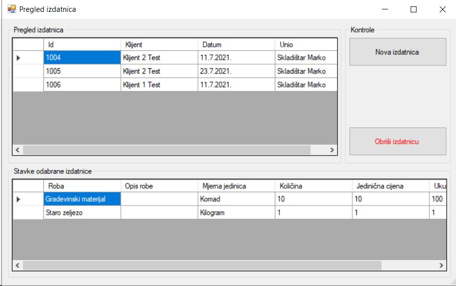

Prozor pregled izdatnica prikazuje sve unesene izdatnice u sustavu. Za svaku odabranu izdatnicu prikazuje sve stavke izdatnice. Korisničke kontrole su "Nova izdatnica" i "Obriši izdatnicu", klikom na tipku "Nova izdatnica" otvara se novi prozor za kreiranje nove izdatnice i dodavanje stavaka na izdatnicu. Klikom na "Obriši izdatnicu" briše se trenutno odabrana izdatnica i svi njezini zapisi.
